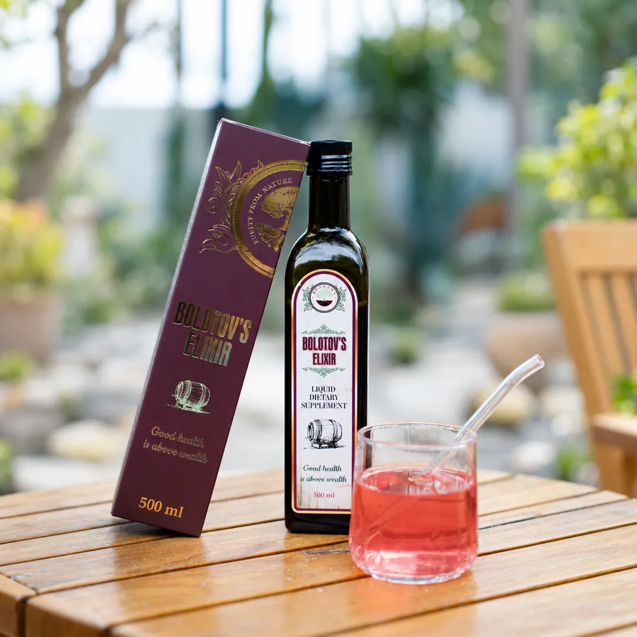

Jak rozpoznać oryginalny Balzam Bolotova
Balzam Bolotova jest popularny, dlatego pojawiają się też podróbki i domowe „balsamy” robione według przepisów z internetu. Podpowiadamy, jak rozpoznać oryginał i gdzie go kupić.

Im bardziej znany produkt, tym częściej pojawiają się jego podróbki. Balzam Bolotova nie jest wyjątkiem: w internecie można trafić na butelki bez etykiet, sprzedaż „na litry” i przepisy, według których „balsam Bołotowa” można rzekomo zmieszać w domu. Podróbka może mieć podobny kolor i zapach — ale nic nie wiadomo o jej składzie, produkcji ani przechowywaniu.
Dlaczego oryginał ma znaczenie
Balzam Bolotova jest produkowany według receptury akademika Borysa Bołotowa, który zgłosił swój balsam w ukraińskim urzędzie patentowym już w 2006 roku (wzór użytkowy nr 16111). Składniki mają jakość spożywczą i występują w ściśle określonych proporcjach — także regulatory kwasowości, w przypadku których dokładna ilość ma znaczenie. Przy domowej mieszance lub produkcie nieznanego pochodzenia nikt nie gwarantuje ani tych proporcji, ani jakości surowców.
Gdzie kupić oryginał
- W oficjalnym sklepie internetowym Centrum Bolotova.
- U naszych partnerów.
Oficjalnym dystrybutorem w UE jest spółka HataVia s.r.o., Praga. Partnerzy sprzedają oryginalne produkty kupowane bezpośrednio od Centrum Bolotova.
Co sprawdzić
- Oryginalne opakowanie. Balzam Bolotova sprzedawany jest wyłącznie w oryginalnym opakowaniu. Przelewany balsam, butelka bez etykiety czy sprzedaż „na litry” to nie oryginał.
- Pojemność. Oryginał sprzedawany jest w butelkach 250 ml i 500 ml.
- Skład. Oryginał zawiera wodę, sok z czerwonych odmian winogron, witaminę C, ocet winogronowy i regulatory kwasowości (kwas siarkowy i kwas chlorowodorowy). Porównaj to z informacjami na etykiecie.
- Dystrybutor. Dystrybutorem oryginału w UE jest HataVia s.r.o.
- Obowiązkowe informacje. Jak każdy środek spożywczy w opakowaniu, także suplement diety musi mieć na opakowaniu m.in. zalecaną porcję do spożycia, datę minimalnej trwałości i oznaczenie partii.
Osad to nie oznaka podróbki
Oryginalny balsam może zawierać niewielki naturalny osad winogronowy, a jego kolor może się nieznacznie różnić między partiami. To efekt minimalnej filtracji. Przed użyciem wystarczy wstrząsnąć butelką.
Domowy „balsam” z przepisu z internetu
W internecie krążą instrukcje, jak przygotować balsam Bołotowa w domu. Taki napój to jednak nie Balzam Bolotova: nikt nie sprawdził jego składu, jakości surowców ani bezpieczeństwa. Praca ze stężonymi kwasami nie jest też czymś, co powinno odbywać się w domowej kuchni.
Co zrobić w razie wątpliwości
Jeśli coś się nie zgadza — brak etykiety lub etykieta bez informacji po polsku, inna pojemność, podejrzanie niska cena albo sprzedawca, który nie potrafi powiedzieć, skąd ma towar — nie stosuj balsamu. Napisz do nas na WhatsApp (link znajdziesz w stopce strony), a chętnie sprawdzimy, czy to oryginał.
Artykuł ma charakter wyłącznie informacyjny i nie zastępuje porady specjalisty.